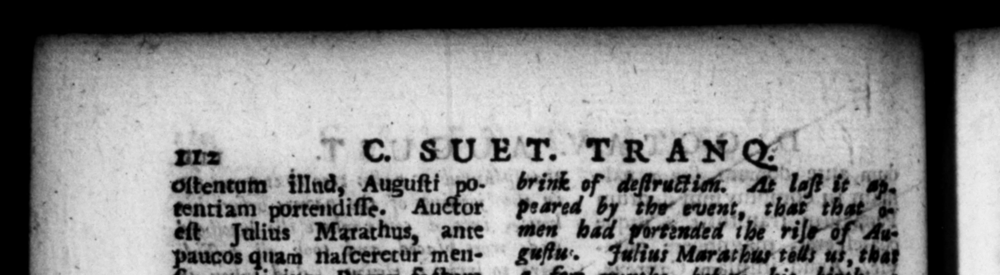

Aucos nam naſderetur menigium Rom factum an quo denvnriabatur e aturam ſenatum exterritum — ne quis Ho annd itus po er uxores habten quiſq ne — 932 rec; ps ne ſenatus conſultum ad #rarium deferretur, In Aſclepiadis Mendetis Ob AoJaudp Apollinis ſacrum media nocte veniſſet, poſita in templo Ie&ica, dum caterg matronæ domum irent, obdormiſſe ; draconem repence irrepſiſle ad eam, pauloque poſt egreſſum: Mam ex cam quaſi à coucuſitu mar iti u Aiken ſe: & ſtatim in corpore ejus extitiſſe maculam, velut depicti draconis : nec potuiſſe unquam eximi: adeo ut wox | feuer balneis perpetuo abnacrit : Auguſtum natum menſe decimo, & ob hoc Ainis filium 7 dem Atta, prius arerer, ſomniavir inte ina ua ferri ad ſidera, explicarique per omnem terrarnm & cli ambitum. Somnlavit & * ter Oxavius, utero Atiæ jubar ſolis exorram. Quo narus eſt die, cum de Catilinz conjuratione ageretur in curia, & Octavius ob uxoris puerperium ſerius adfuiſler, nora ac vulgata res eſt P. Nigidium comperta more caſa, 1 ut horam quo que partus acceperit, affirmaſſe, dominum terrarum orbi natum. Otavio poſtea, cum per lecreta Thraciæ exercitum duceret, in L iberi patris luco barbara ceremonia de filio conlulenti, idem affirmatum eſt à ſacerdotibus, quod iufuſo ſuper alta* r libris lego, Atiam, cum ad ſolemne dn ght upon a religious ſolem 4 * of A | — 14 to the oy and 1 army throuth the — of at $ bt ** Bur that 10 7 morgh de h tadys were wit „in arder to ecure 2 x pe pet? of tht ti Lit), root 9 reſolution ſenkte ſhould wer 8 22 2 s 0 14 — that 2 2 at in honour” of Apollo, when when the 5. of the matrous retired home, in her chair in the _ e —— upon it; ht as -u ey, and _—_— 1 mark a 5 — 2 . . ri wig n 127 4 la decline tf oy 2 lick was aths ; that Auzu in the genth month 2 and that reaſon was thought to be the » The ſume Atia before delivery, dreamt that her bowels were thrauyhet the whole compaſs ven and earth. His father RE Saks tos dreamt that a b j from his Lady's womb. Upon the day he was born, the ſenate being buſy in the conſoderation of Catiline's conſpiracy, an} vius, upon account of bis lady's — on, coming late into the 2 * 4 noted and well known fto F. Nigidius, upon hearing 2 occa· ſoon of his comi 7 late, 2 withall the hour of his lady's delivery, declared that the world had got 4 maſter, And when Oftavius upon marching with his ace, 4c cording to the uſage of the country, conala the oracle of -father * 4
